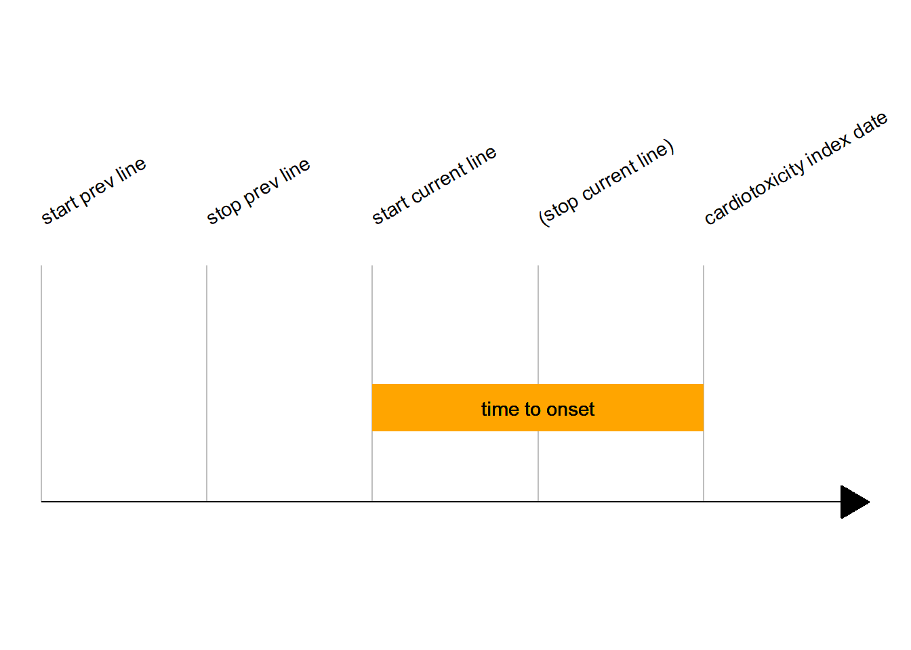

Chapter 11 Multi-instrument variables
11.1 Date and time variables
As dates and times are used across instruments to capture delays between an event and another (e.g. between index cardiotoxicity and death), there are attributed a specific naming scheme:
They do not start by the instrument identifier
They have their own identifier
datefor dates andtifor times.Time variables always have 3 components:
The
tiidentifierThe first event identifier
The second event identifier
There is an exception to this naming rule: time between 2 cures of ICI (either previous line or current line), which has the long suffix regimen_freq.
For example, time between index cardiotoxicity and death is ti_ic_death. An event identifier can have a middle _ if its very long (e.g. cl1stctla4_other for current line first dose of an unspecified anti-CTLA4, although this is quite a rare case.
Time variables represent delays between two dates.
Of note, times can be expressed in days, weeks or years.
| var | instrument | unit | quick desc |
|---|---|---|---|
ti_tobaccoquit_ic |
demo | years | From tobacco quitting to IC |
ti_otx_ic |
demo | years | From organ transplant x to IC |
ti_plicistop_ic |
demo | days | From previous line ICI stop (end of regimen) to IC |
pl_drug_regimen_freq |
previous_line | weeks | From one cure to another, during an ICI therapy regimen |
ti_ic_1ststeroid |
ic | days | From IC to first dose of steroids |
ti_cl1stnivo_ic |
cl | days | From current line ICI-drug 1st infusion to IC |
ti_ic_ihdischarge |
ih | days | Length of hospital stay |
11.2 Time to cardiotoxicity onset from immune checkpoint inhibitor introduction
As the title suggests, the idea is to collect the time to onset between the first dose of immune checkpoint inhibitor received during the current cycle and the occurrence of cardiotoxicity.

This data is stored at the immune checkpoint inhibitor level, e.g., a patient who received nivolumab will have this data stored in a nivolumab specific variable. The structure for this data is
| Var name | Description |
|---|---|
ti_cl1stdrug_ic |
It is a delay, in days. Drug name is abbreviated to a 4 digit name |
ti_cl1stdrug_ic__c |
Same but computed from dates (when available). |
ti_cl1stdrug_ic__old |
It is an old variable which has now the \@ HIDDEN status, and is similar to ti_cl1stdrug_ic__c |
To capture this time to onset, you have to check every possibilities for a patient, e.g. you must check for all immune checkpoint inhibitor level time variables and choose which of these 3 variables you keep first, if ever more than one is available. This gives a quite heavy piece of code
ti_cl1stici_ic = expr(pmax( # pmax here: maximum delay (in the case multiple ICI were prescribed sequentially)
eval(tto_uni_3v(ti_cl1statez_ic__c, ti_cl1statez_ic, ti_cl1statez_ic__old)),
eval(tto_uni_3v(ti_cl1stavel_ic__c, ti_cl1stavel_ic, ti_cl1stavel_ic__old)),
eval(tto_uni_3v(ti_cl1stcemi_ic__c, ti_cl1stcemi_ic, ti_cl1stcemi_ic__old)),
eval(tto_uni_3v(ti_cl1stdurv_ic__c, ti_cl1stdurv_ic, ti_cl1stdurv_ic__old)),
eval(tto_uni_3v(ti_cl1stipil_ic__c, ti_cl1stipil_ic, ti_cl1stipil_ic__old)),
eval(tto_uni_3v(ti_cl1stnivo_ic__c, ti_cl1stnivo_ic, ti_cl1stnivo_ic__old)),
eval(tto_uni_3v(ti_cl1stpemb_ic__c, ti_cl1stpemb_ic, ti_cl1stpemb_ic__old)),
eval(tto_uni_3v(ti_cl1sttrem_ic__c, ti_cl1sttrem_ic, ti_cl1sttrem_ic__old)),
eval(tto_uni_3v(ti_cl1stpd1_other_ic__c, ti_cl1stpd1_other_ic,
ti_cl1stpd1_other_ic__old)),
eval(tto_uni_3v(ti_cl1stpdl1_other_ic__c,
ti_cl1stpdl1_other_ic, ti_cl1stpdl1_other_ic__old)),
eval(tto_uni_3v(ti_cl1stctla4_other_ic__c, ti_cl1stctla4_other_ic,
ti_cl1stctla4_other_ic__old)),
na.rm = TRUE)
)Where eval(tto_univ_3v()) would be a prioritizer function among the 3 variables. Note that we might want to substract the ti_icsy_ic delay, if we’re interested in the beginning of symptoms rather than index cardiotoxicity date.
tto_uni_3v <- # A 3 variables time to onset unifier !
function( # used to organize the three variables of time to cardiotox onset from drug initiation
ti_icistart_event__c, # all quasi quoted names of columns from data. One is the calculated delay `ti_icistart_event__c`, one is manually entered when dates are not available `ti_icistart_event`, one is a old version of the variable `ti_icistart_event__old`
ti_icistart_event,
ti_icistart_event__old
){
ti_icistart_event__c <- enexpr(ti_icistart_event__c)
ti_icistart_event <- enexpr(ti_icistart_event)
ti_icistart_event__old <- enexpr(ti_icistart_event__old)
# underlying logic:
# first, prioritize calculated over manual vars with numvar_uni (intermediate object uni).
# second, take the longest delay of uni and __old, if both are available.
# third, if only one available, keep it (via na.rm = TRUE in pmax)
# generate an expression to call numvar_uni
uni <- numvar_uni(!!ti_icistart_event__c,
!!ti_icistart_event)
ex <- quo(pmax(
eval(uni),
as.numeric(!!ti_icistart_event__old),
na.rm = TRUE)
)
ex
}
numvar_uni <- # Numeric variables unifier
function( # used to organize data entered from 2 variables, currently its a prioritization
var1, # all quasi quoted names of columns from data. usually, one is the calculated var, one is manually entered, var1 will be prioritize over var2
var2
# underlying data.frame data argument is omitted
){
var1 <- enexpr(var1)
var2 <- enexpr(var2)
ex <- expr(case_when(
!is.na(!!var1) ~ as.numeric(!!var1),
!is.na(!!var2) ~ as.numeric(!!var2),
TRUE ~ NA_real_
))
ex
}